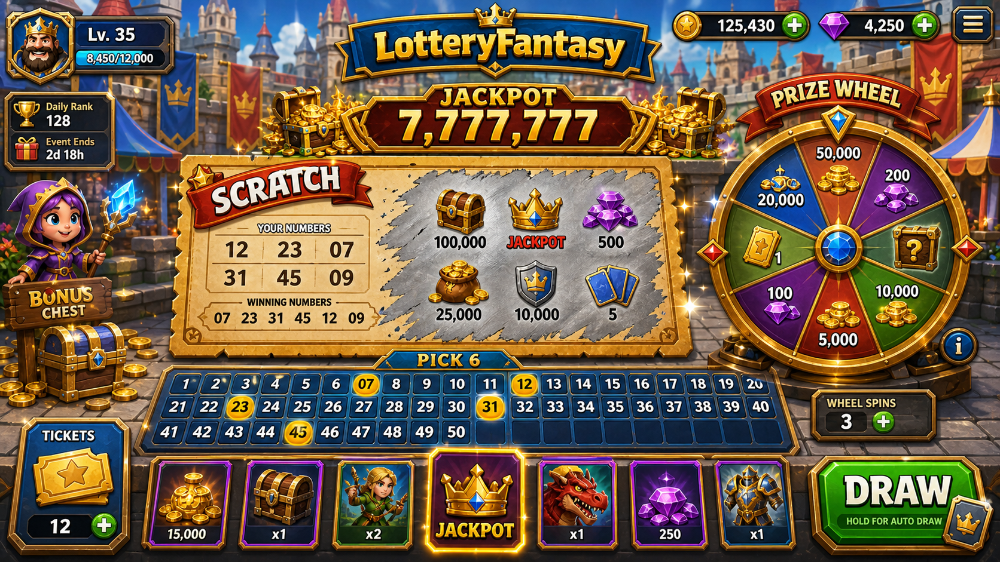

범례: [FACT]=파일/로그 존재로 확인된 사항, [PROPOSAL]=파일명·버전명에서 유추한 제안. 버전: LotteryFantasy_v0.3.2_portable.exe(0.3.2) 기준 작성.
- 본 세션은 프로젝트 폴더(C:\Development\14_LT) 내 파일 목록만 열람했으며 문서 본문은 읽지 못했다.
- 회사 정책상 근거 수준은 low로 고정하며, 후속 적용 시 원문 대조로 갱신해야 한다.
[PROPOSAL] 복권/로또 테마의 모바일 게임은 단순 숫자 추첨 결과만 보여주어 재미(수집·성장·전략)가 부족하다고 가정한다.
- 파일명에 등장하는 덱(Deck), 배틀(Battle), 원소 에너지(ElementalEnergy) 시스템은 로또 추첨을 캐릭터 수집/전투와 결합하려는 의도로 추정된다.
- persona_playtest_feedback.md 파일이 별도로 존재하는 것으로 보아, 플레이테스트 피드백이 수집되어온 이력이 있으나 세부 내용은 미확인이다.
[PROPOSAL] 로터리 추첨을 판타지 속성 배틀과 덱 수집으로 이어주는 미니마켓(minimal)·캐주얼(casual) 모바일 게임.
- 포지셔닝: 기존 로또 앱과 판타지 카드 게임 사이의 하이브리드로 추정되나, 공식 포지셔닝 문서는 확인하지 못했다.
[PROPOSAL] 이서연(28세, 직장인, 출퇴근 지하철에서 5~10분 단위로 모바일 게임을 하는 문맥). 로터리 결과 건조함을 팔타지 진행으로 보완받고 싶어한다.
- 이 페르소나는 persona_playtest_feedback.md 본문을 확인하지 못한 상태에서 작성한 제안이며, 원문 대조 후 실제 이름/나이/직업으로 교체해야 한다.
[PROPOSAL] 파일명 기준 추정 기둥: (1) 로터리 추첨 연동 수집(덱 구성), (2) 속성 기반 전투(원소 에너지), (3) 지속적 성장(배틀 반복).
- 핵심 재미는 '추첨 결과가 캐릭터 성장으로 이어지는 감각'일 것으로 추정되나, 이를 뒷받침하는 공식 설계 문서는 확인하지 못했다.
유저가 선택을 하면 결과가 되고, 그 결과 때문에 다시 선택을 한다.
[PROPOSAL, 정확한 순환 문장] 로터리 추첨 → 속성 매칭 분석 → 덱 구성 → 배틀 진행 → 보상 수령 → 로터리 추첨으로 돌아간다.
- 이 순환은 DeckSystemTests.cs와 BattleManagerTests.cs, ElementalEnergySystemTests.cs 테스트 대상 시스템명에서 역산한 구조이며, 실제 루프 설계 문서는 미확인이다.
[PROPOSAL] 0-5초 로터리 추첨 연출 시청 → 5-15초 추첨 결과가 속성/캐릭터로 변환되는 배틀 준비 화면 → 15-25초 첫 배틀 턴 진행 → 25-30초 결과/보상 화면.
- 스크립트/테스트 파일명에서 유추한 구조이며, 실제 타임라인 스펙/화면 순서는 문서로 검증되지 않았다.
[PROPOSAL] 배틀 종료 조건은 BattleManagerTests.cs에 대응하는 체력/시간 등 변수 소진으로 추정되며, 속성 상성/보성 관계는 ElementalEnergySystemTests.cs에 의해 검증되는 규칙으로 추정된다.
- 실제 수치(데미지값, 승리 조건 공식 정의)는 테스트 코드 또는 기획서 본문을 읽지 못해 미확인이다.
[PROPOSAL] 덱 시스템을 통한 카드/캐릭터 보유와 순환 구조, 원소 에너지 속성을 통한 성장 경로로 추정된다.
- ScriptableObjects 폴더 존재로 보아 데이터 기반 콘텐츠 관리(카드/적/아이템 정의)가 있을 가능성이 있으나, 구체 수량이나 밸런싱 공식은 미확인이다.
[PROPOSAL] 가설 1: 로터리 추첨이 속성로 변환되는 연결이 명확하면 재방문 의도가 증가한다.
- 가설 2: 배틀 결과가 짧은 티임과 명확한 피드백을 제공하면 세션 당 배틀 수가 증가한다.
- 검증 방법: EditMode 테스트(BattleManagerTests.cs, DeckSystemTests.cs, ElementalEnergySystemTests.cs)로 규칙 회귀를 검증하고, persona_playtest_feedback.md에 기록된 실제 플레이테스트 피드백을 추가 확인해야 한다(본문 미확인).
[PROPOSAL, 수치는 가정치] 레퍼런스 A(일반 로터리 앱): 핵심 행동 3단계(번호 선택 → 추첨 실행 → 결과 확인) – 교훈: 단계가 짧을수록 재방문 당 마찰가 줄어든다.
- 레퍼런스 B(카드 배틀 모바일 게임): 핵심 행동 4단계(덱 구성 → 전투 진입 → 턴 진행 → 보상 수령) – 교훈: 속성 상성 관계가 명확해야 전략적 선택이 생긴다.
- 이 분석은 공식 레퍼런스 문서가 아니라 프로젝트 도메인(로또+카드배틀)에 관한 일반적 추론이며, 실제 벤치마킹 대상은 미확인이다.
[PROPOSAL] KPI 1: 첫 배틀 완료까지 소요 시간 30초 이내 검증 목표 – 측정: 로거인 시점부터 배틀 종료 이벤트까지 타임스탬.
- KPI 2: EditMode 테스트 스위트 전체 통과 유지 – 측정: LotteryFantasyEditModeTestRunner.cs 실행 결과 로그(예: unity-test-toony.log, unity-editmode-final.log)를 지속 수집.
- 실제 목표치/현재치는 로그 본문을 읽지 못해 미확인이며, 위 항목은 측정 체계에 대한 제안이다.
[PROPOSAL, 5개 상태] 상태1 추첨 대기 화면, 상태2 추첨 진행 애니메이션 화면, 상태3 덱 구성 화면, 상태4 배틀 HUD(체력/에너지 게이지), 상태5 결과/보상 요약 화면.
- TextMesh Pro 패키지 존재로 보아 텍스트 기반 UI가 구현되어 있을 가능성이 있으나 구체 와이어프레임/레이아웃은 문서로 검증되지 않았다.
[PROPOSAL] 덱/캐릭터 리스트가 비었을 경우 기본 카드 지급 안내 항을 표시하고, 네트워크/로따리 연동 실패 시 재시도 안내를 노출하는 구조를 가정한다.
- 텍스트 길이 3배 대응은 TextMesh Pro의 오토 사이즈 기능을 활용할 가능성이 있으나, 실제 적용 여부는 문서로 검증되지 않았다.
[PROPOSAL] 색각 구분이 안 되는 유저를 위해 속성 아이콘에 보조 기호를 병기하는 안을 검토할 수 있다.
- 실제 접근성 구현물(스크린리더, 고대비 모드, 폰트 크기 조절 등)은 코드나 문서에서 확인되지 않았다.
[PROPOSAL] sfx-vfx-candidates-20260808.md 파일명으로 보아 SFX/VFX 후보가 검토 중이며, 추첨 성공/실패에 따른 사운드·이펙트 분리가 제안될 가능성이 있다.
- 모바일 환경 특성상 단순 진동(햄틱) 피드백을 배틀 적중/승리 시점에 적용하는 안을 검토할 수 있으나, 파일 본문은 읽지 못해 확정 내용은 미확인이다.
[FACT, 파일 존재 기준] 덱 시스템: 관련 테스트 파일(DeckSystemTests.cs) 존재 — 구현 코드 자체는 미열람.
- 배틀 시스템: 관련 테스트 파일(BattleManagerTests.cs) 존재 — 구현 코드 자체는 미열람.
- 원소 에너지 시스템: 관련 테스트 파일(ElementalEnergySystemTests.cs) 존재 — 구현 코드 자체는 미열람.
- 테스트 실행기/랭추에디터 도구(LotteryFantasyEditModeTestRunner.cs, DevRefreshTool.cs) 파일 존재 확인됨.
[FACT, 로그 파일 존재 기준] Unity 빌드 로그 파일 다수 존재: unity-build-v032.log, unity-build-v032-retry.log, unity-build-v032-buildtarget.log, unity-build-v032-after-cache-clean.log, unity-build-windows-retry-escalated.log.
- 'Spin Advisor' 관련 커밋 로그 파일 다수 존재: unity-spin-advisor-commit.log, unity-spin-advisor-commit-fixed.log, unity-spin-advisor-commit-2.log, unity-spin-advisor-commit-fixed-2.log, unity-spin-advisor-final.log.
- EditMode 테스트 관련 로그 파일 존재: unity-test-toony.log, unity-editmode-final.log. 포터블 실행파일 LotteryFantasy_v0.3.2_portable.exe 존재 확인됨.
- 로그 내용(성공/실패 여부, 경고/오류 건수)은 읽지 못해 보고하지 않으며, 이는 파일 존재 사실만을 기록한 것이다.
[PROPOSAL] 리스크 1: 여러 번의 빌드 재시도 로그(retry, after-cache-clean, escalated 파일명)가 존재하는 것으로 보아, 빌드 안정성 이슈가 반복되었을 가능성을 배제할 수 없다(로그 내용 미확인).
- 리스크 2: 로터리 테마 모바일 게임은 지역별 사해법 규제 대상이 될 수 있어 출시 대상 마켓 검토가 필요하다.
- 구체적 리스크 평가는 원문 미확인으로 추후 검토가 필요하다.
[PROPOSAL] 1) 핵심 기획/피드백 문서(LotteryFantasy_기획서.md, persona_playtest_feedback.md, structure_authority.md, next_improvement_instruction.md)에 대한 읽기 권한 확보 후 본 GDD 재검증.
- 2) 실패/재시도 패턴이 반복된 빌드 로그 본문을 확인하여 빌드 안정성 이슈 유무 판단.
- 3) sfx-vfx-candidates-20260808.md 및 LotteryFantasy_이미지_UI_리소스_목록.md를 검토하여 UI/오디오 품질 자산의 실제 적용 상태를 확인.